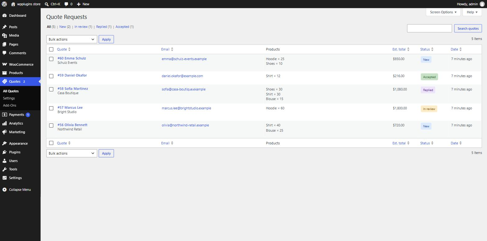
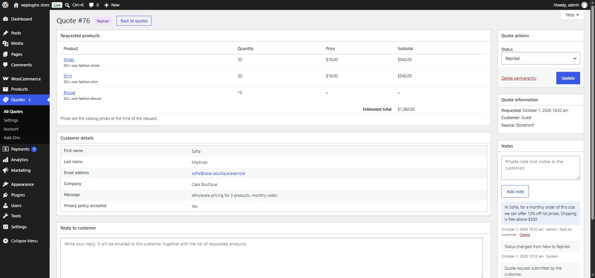

Managing quotes
Every request lands in Quotes › All Quotes. Open one to see what was requested, keep notes and reply to the customer.
The quotes list

- Columns — quote number and customer, email, products, estimated total, status and date. Click a column title to sort.
- Status filters above the table show how many quotes have each status.
- Search by customer name, email or quote number (for example
#58). - Bulk actions — change the status of the selected quotes, or delete them permanently.
- Screen Options (top right) sets how many quotes appear per page.
- The number next to the Quotes menu is the count of quotes with the status New.
The quote screen

- Requested products — products, variations, SKUs and quantities. Prices are the catalog prices at the time of the request, with an estimated total.
- Customer details — everything the customer filled in. Email and phone are clickable.
- Quote actions — change the status and click Update, or Delete permanently.
- Quote information — when it was requested, the customer (guest or a linked user account) and the source.
With Pro the products box becomes a proposal editor: set your own prices and quantities, add products, discounts, shipping and fees, then send the proposal or create an order.
Replying to a customer
- Write your message in Reply to customer.
- Leave Set status to "Replied" ticked to update the status automatically.
- Click Send reply. The customer receives the Quote reply email with your message and the list of requested products.
The reply is also saved as a note on the quote, so you always know what was sent. If the email could not be sent, the message is still saved and a warning tells you to check that the Quote reply email is enabled in WooCommerce › Settings › Emails.
You can also simply reply to the New quote request email in your mailbox — its reply-to address is the customer's email.
Notes
The Notes box shows the quote's history:
- Private notes you add — never shown to the customer.
- Replies sent to the customer.
- System notes — status changes and other events, recorded automatically.
Statuses
| Status | Meaning |
|---|---|
| New | Just received; nobody has looked at it yet. |
| In review | You are working on it. |
| Replied | You replied to the customer. |
| Accepted | The customer agreed to your offer. |
| Rejected | The customer declined, or you won't proceed. |
| Closed | Finished — nothing more to do. |
| Proposal sent PRO | A priced proposal was sent and is waiting for the customer. |
| Expired PRO | The proposal passed its expiry date without an answer. |
| Ordered PRO | The quote was turned into a WooCommerce order. |
If you deactivate Pro, quotes with Pro statuses keep them and still show a readable label.
Customer data & privacy
- Export — Tools › Export Personal Data includes the customer's quotes.
- Erase — Tools › Erase Personal Data anonymises their quotes (name, email, form answers and IP address) while keeping the products and totals for your records.
- A suggested text for your privacy policy is added to Settings › Privacy › Policy Guide.
- Quotes are never deleted when you deactivate the plugin. They are only removed on deletion if you turned on Remove data on uninstall.